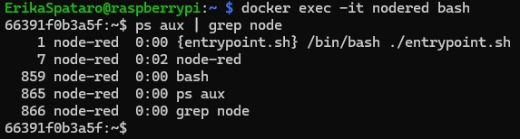
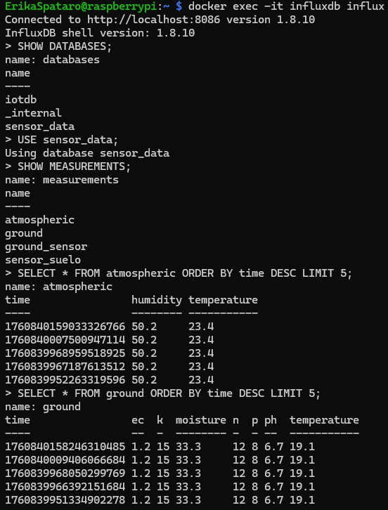
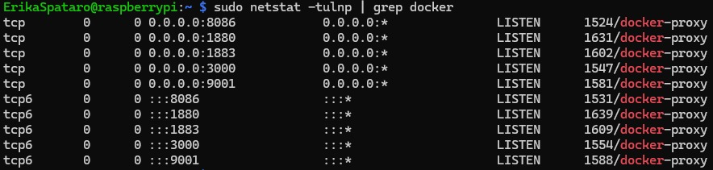
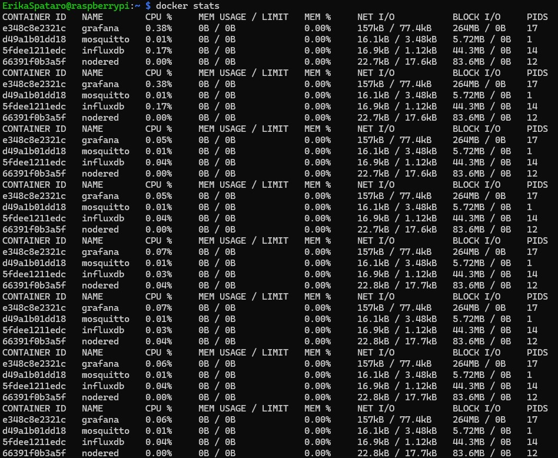
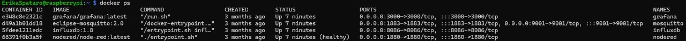
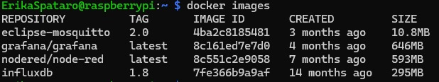
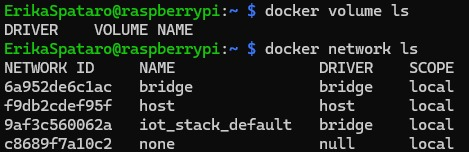
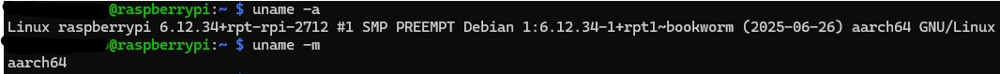

Stack IoT y Servicios de Infraestructura
Esta sección describe el stack IoT que soporta el sistema de red mesh agrícola, incluyendo la infraestructura de servicios containerizados con Docker.
Arquitectura del Stack IoT
El sistema utiliza un conjunto de servicios containerizados que trabajan en conjunto para proporcionar una solución completa de IoT:
graph TB
subgraph "Stack IoT Completo"
subgraph "Capa de Sensores"
A[Nodos ESP32] --> B[Gateway LoRa]
end
subgraph "Capa de Comunicación"
B --> C[Mosquitto MQTT<br/>Puerto 1883]
B --> D[Mosquitto WebSocket<br/>Puerto 9001]
end
subgraph "Capa de Procesamiento"
C --> E[Node-RED<br/>Puerto 1880]
D --> E
end
subgraph "Capa de Almacenamiento"
E --> F[InfluxDB<br/>Puerto 8086]
end
subgraph "Capa de Visualización"
F --> G[Grafana<br/>Puerto 3000]
end
end
Servicios del Stack IoT
InfluxDB - Base de Datos de Series Temporales
InfluxDB es la base de datos de series temporales que almacena todos los datos de sensores del sistema agrícola.
{kind=link}
Descripción de la imagen: Esta captura muestra la interfaz de administración de InfluxDB donde se configuran las bases de datos, usuarios y políticas de retención. Se pueden observar las configuraciones de autenticación y las opciones de gestión de datos temporales para el almacenamiento de información de sensores agrícolas.
Características principales: - Almacenamiento optimizado para datos de series temporales - API REST para consultas y escritura de datos - Políticas de retención automáticas - Consultas SQL-like con InfluxQL
Acceso: http://localhost:8086
Grafana - Visualización y Dashboards
Grafana proporciona dashboards interactivos para visualizar los datos de sensores en tiempo real.
{kind=link}
Descripción de la imagen: Dashboard principal de Grafana mostrando gráficos en tiempo real de temperatura, humedad, presión atmosférica y otros parámetros ambientales. Se observan múltiples paneles con diferentes visualizaciones como gráficos de líneas, gauges y tablas de datos que permiten monitorear el estado del sistema agrícola en tiempo real.
Características principales: - Dashboards interactivos y personalizables - Múltiples tipos de visualización (gráficos, tablas, gauges) - Alertas automáticas basadas en umbrales - Integración nativa con InfluxDB
Acceso: http://localhost:3000 (usuario: admin, contraseña: admin)
Node-RED - Procesamiento de Flujos
Node-RED es el motor de procesamiento que gestiona el flujo de datos entre los sensores y los servicios de almacenamiento.
{kind=link}
Descripción de la imagen: Interfaz de Node-RED mostrando un flujo de trabajo complejo que incluye nodos MQTT para recepción de datos, transformaciones de datos, validaciones y envío a InfluxDB. Se observan múltiples conexiones entre nodos que representan el flujo de procesamiento desde la recepción de datos de sensores hasta su almacenamiento final.
Características principales: - Editor visual de flujos drag-and-drop - Nodos predefinidos para IoT y MQTT - Procesamiento en tiempo real - Transformación y validación de datos
Acceso: http://localhost:1880
Mosquitto MQTT - Broker de Mensajería
Mosquitto es el broker MQTT que maneja la comunicación entre los nodos sensores y los servicios de procesamiento.
{kind=link}
Descripción de la imagen: Panel de administración de Mosquitto mostrando la configuración del broker, tópicos activos, clientes conectados y estadísticas de mensajes. Se pueden observar las configuraciones de seguridad, usuarios y permisos de acceso que permiten la comunicación segura entre los nodos sensores y el sistema de procesamiento.
Características principales: - Broker MQTT ligero y eficiente - Soporte para QoS (Quality of Service) - Autenticación y autorización - Persistencia de mensajes
Puertos: 1883 (MQTT), 9001 (WebSocket)
Implementación Docker
El stack IoT completo se implementa utilizando Docker Compose para facilitar el despliegue y gestión de servicios.
Despliegue con Docker Compose
{kind=link}
Descripción de la imagen: Terminal mostrando la ejecución de docker compose up con todos los servicios del stack IoT iniciándose. Se observan los logs de cada contenedor (InfluxDB, Grafana, Node-RED, Mosquitto) y el estado de inicialización de cada servicio, confirmando que todos los componentes se levantan correctamente.
Comando de despliegue: .. code-block:: bash
docker compose -f docker compose-iot.yml up -d
Configuración de Red Docker
{kind=link}
Descripción de la imagen: Diagrama de red Docker mostrando cómo los contenedores se comunican entre sí a través de una red personalizada. Se observan las conexiones entre InfluxDB, Grafana, Node-RED y Mosquitto, así como la exposición de puertos al host para acceso externo a los servicios.
Tabla de Puertos y Servicios
La siguiente tabla describe todos los puertos utilizados por el stack IoT:
Puerto |
Servicio |
Descripción |
|---|---|---|
8086 |
🟢 InfluxDB |
Interfaz HTTP de la base de datos de series temporales. Accesible en http://<IP-Raspberry>:8086. |
1880 |
🟠 Node-RED |
Interfaz web del entorno de flujos. Accesible en http://<IP-Raspberry>:1880. |
1883 |
🔵 Mosquitto (MQTT) |
Puerto estándar MQTT para publicar y suscribirse a tópicos. |
3000 |
🟣 Grafana |
Interfaz de visualización de dashboards. Accesible en http://<IP-Raspberry>:3000. |
9001 |
⚙️ Mosquitto WebSocket |
Puerto adicional de Mosquitto para conexiones MQTT sobre WebSocket (usado, por ejemplo, cuando Node-RED o aplicaciones web se conectan mediante ws://<IP>:9001). |
Flujo de Datos del Sistema
{kind=link}
Descripción de la imagen: Diagrama de flujo completo que muestra cómo los datos fluyen desde los sensores ESP32, a través del gateway LoRa, hacia Mosquitto MQTT, luego a Node-RED para procesamiento, después a InfluxDB para almacenamiento, y finalmente a Grafana para visualización. El diagrama ilustra la arquitectura completa del sistema de monitoreo agrícola.
Monitoreo y Mantenimiento
{kind=link}
Descripción de la imagen: Interfaz de monitoreo que muestra el estado de todos los contenedores Docker, uso de recursos (CPU, memoria), logs en tiempo real y métricas de rendimiento. Se observan indicadores de salud para cada servicio del stack IoT, permitiendo un monitoreo continuo del sistema.
Herramientas de monitoreo: - Docker Stats para métricas de contenedores - Logs centralizados con Docker logging - Health checks configurados - Alertas automáticas en Grafana
Seguridad y Configuración

Descripción de la imagen: Panel de configuración de seguridad mostrando configuraciones de autenticación, certificados SSL/TLS, políticas de acceso y configuraciones de red segura para el stack IoT. Se observan las opciones de configuración que garantizan la seguridad de la comunicación entre servicios.
Consideraciones de seguridad: - Autenticación en todos los servicios - Certificados SSL para conexiones seguras - Políticas de firewall restrictivas - Backup automático de configuraciones
Uso del Sistema
Acceso a los servicios:
InfluxDB (Puerto 8086): - Interfaz web para administración de bases de datos - API REST para consultas y escritura de datos - Configuración de políticas de retención
Grafana (Puerto 3000): - Dashboards de visualización - Configuración de alertas - Gestión de usuarios y permisos
Node-RED (Puerto 1880): - Editor visual de flujos - Configuración de nodos MQTT - Transformación de datos
Mosquitto (Puertos 1883/9001): - Broker MQTT para comunicación - WebSocket para conexiones web - Gestión de tópicos y clientes
Flujo de trabajo típico: 1. Los sensores ESP32 envían datos al gateway LoRa 2. El gateway publica los datos en tópicos MQTT 3. Node-RED procesa y transforma los datos 4. Los datos se almacenan en InfluxDB 5. Grafana visualiza los datos en dashboards
Nota
Para más detalles técnicos específicos de cada servicio, consulta la documentación oficial de InfluxDB, Grafana, Node-RED y Mosquitto.